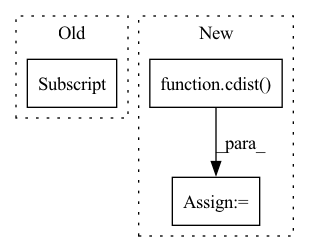

Pattern ID :36909
Before Change
else:
import scipy.sparse as sp
if sp.issparse(darray[0] .embedding):
x_mat = sp.vstack(self.get_attributes("embedding"))
y_mat = sp.vstack(darray.get_attributes("embedding"))
is_sparse = TrueAfter Change
x_mat = sp.vstack(self.get_attributes("embedding"))
y_mat = sp.vstack(darray.get_attributes("embedding"))
dists = cdist( x_mat, y_mat, metric_name, is_sparse=True)
else:
x_mat = self.embeddings
y_mat = darray.embeddings
dists = cdist(x_mat, y_mat, metric_name)In pattern: SUPERPATTERN
Frequency: 3
Non-data size: 3
Instances Fragment ID: 105062375
Project Name: jina-ai/jina
Commit Name: 19f31c0aa35276bab7daf47b147b0a16277cd2c0
Time: 2021-09-20
Author: artex.xh@gmail.com
File Name: jina/types/arrays/neural_ops.py
M Class Name: DocumentArrayNeuralOpsMixin
N Class Name: DocumentArrayNeuralOpsMixin
M Method Name: _match(7)
N Method Name: _match(6)
M Parent Class:
N Parent Class:
M File Name: jina/types/arrays/neural_ops.py
N File Name: jina/types/arrays/neural_ops.py
M Start Line: 126
M End Line: 145
N Start Line: 127
N End Line: 151
Before Change
// pos = dists + 1e5 * (~pos_mask).float()
pos = furthest_positive[:, None]
pos_weight = (self.pos_optimal - pos).detach()
pos_weight = torch.max(torch.zeros_like(pos_weight), pos_weight)
lse_positive = torch.logsumexp(-self.log_scale * (pos - self.pos_margin) * pos_weight, dim=-1)
After Change
def forward(self, anchor, positive, dist_keypts):
pids = torch.FloatTensor(np.arange(len(anchor))).to(anchor.device)
dists = cdist( anchor, positive, metric="euclidean")
// build false negative
false_negative = dist_keypts < self.safe_radius
pos_mask = torch.eq(torch.unsqueeze(pids, dim=1), torch.unsqueeze(pids, dim=0))
neg_mask = torch.logical_not(pos_mask | false_negative)
// dists * pos_mask get the distance of each valid anchor-positive pair.
furthest_positive, _ = torch.max(dists * pos_mask.float(), dim=1)
// here we use "dists + 10000*pos_mask" to avoid the anchor-positive pair been selected.
closest_negative, _ = torch.min(dists + 1e5 * pos_mask.float(), dim=1)
// closest_negative_row, _ = torch.min(dists + 1e5 * pos_mask.float(), dim=0)
// closest_negative = torch.min(closest_negative_col, closest_negative_row)
average_negative = (torch.sum(dists, dim=-1) - furthest_positive) / (dists.shape[0] - 1)
diff = furthest_positive - closest_negative
accuracy = (diff < 0).sum() * 100.0 / diff.shape[0]
pos = dists - 1e5 * neg_mask.float()
pos_weight = (pos - self.pos_optimal).detach()
pos_weight = torch.max(torch.zeros_like(pos_weight), pos_weight)
lse_positive = torch.logsumexp(self.log_scale * (pos - self.pos_margin) * pos_weight, dim=-1)
neg = dists + 1e5 * (~neg_mask).float()
neg_weight = (self.neg_optimal - neg).detach()
neg_weight = torch.max(torch.zeros_like(neg_weight), neg_weight)
lse_negative_row = torch.logsumexp(self.log_scale * (self.neg_margin - neg) * neg_weight, dim=-1)
lse_negative_col = torch.logsumexp(self.log_scale * (self.neg_margin - neg) * neg_weight, dim=-2)
loss_col = F.softplus(lse_positive + lse_negative_row) / self.log_scale
loss_row = F.softplus(lse_positive + lse_negative_col) / self.log_scale
loss = loss_col + loss_row
return torch.mean(loss), accuracy, furthest_positive.tolist(), average_negative.tolist(), 0, dists
Fragment ID: 105062374
Project Name: xuyangbai/d3feat.pytorch
Commit Name: f47b90c1a30103d37497f6614f6e7d59f20d7399
Time: 2020-07-21
Author: 653823597@qq.com
File Name: utils/loss.py
M Class Name: CircleLoss
N Class Name: CircleLoss
M Method Name: forward(4)
N Method Name: forward(4)
M Parent Class: nn.Module
N Parent Class: nn.Module
M File Name: utils/loss.py
N File Name: utils/loss.py
M Start Line: 125
M End Line: 161
N Start Line: 124
N End Line: 155
Before Change
res = cd_(ds[ds.sa.chunks == 1, ])
// Check to make sure the pdist results are close to CDist results
assert_array_almost_equal(res.samples.ravel(),
squareform(pd_)[:3, 3:] .ravel())
// check it doesn"t blow up without mean group samples
for metric in metrics:After Change
for metric in metrics:
metric_kwargs = {"VI": VI_mahalanobis} if metric == "mahalanobis" \
else {}
scipy_cdist = cdist( train_data.samples, test_data.samples,
metric, **metric_kwargs)
pymvpa_cdist = CDist(pairwise_metric=metric,
pairwise_metric_kwargs=metric_kwargs,
sattr=sattr)
Fragment ID: 105062378
Project Name: PyMVPA/PyMVPA
Commit Name: a243ad678a264c898e133bb1f97efed72703ee06
Time: 2016-10-02
Author: matteo.visconti.gr@dartmouth.edu
File Name: mvpa2/tests/test_rsa.py
M Class Name: AnonimousClass
N Class Name: AnonimousClass
M Method Name: test_CDist(0)
N Method Name: test_CDist(0)
M Parent Class:
N Parent Class:
M File Name: mvpa2/tests/test_rsa.py
N File Name: mvpa2/tests/test_rsa.py
M Start Line: 81
M End Line: 109
N Start Line: 81
N End Line: 105